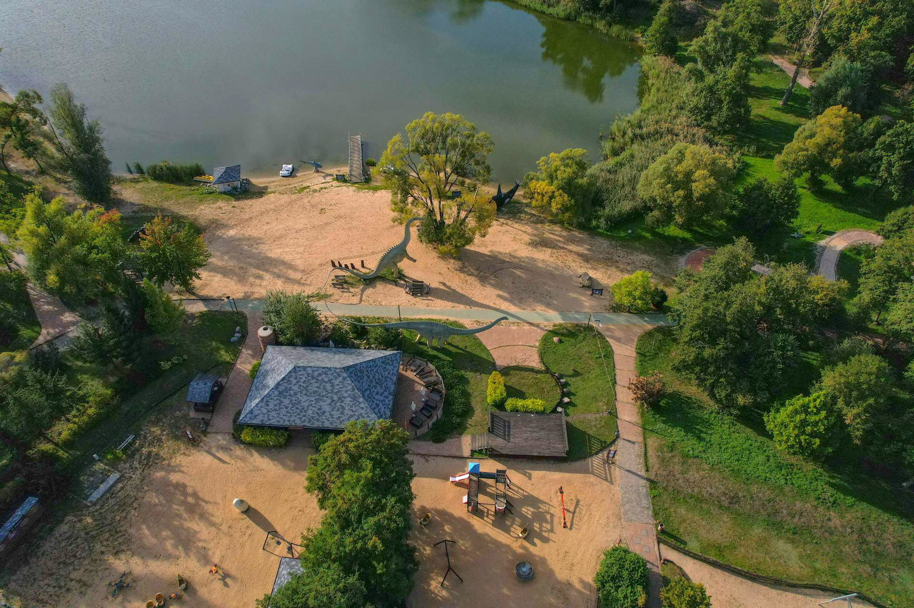
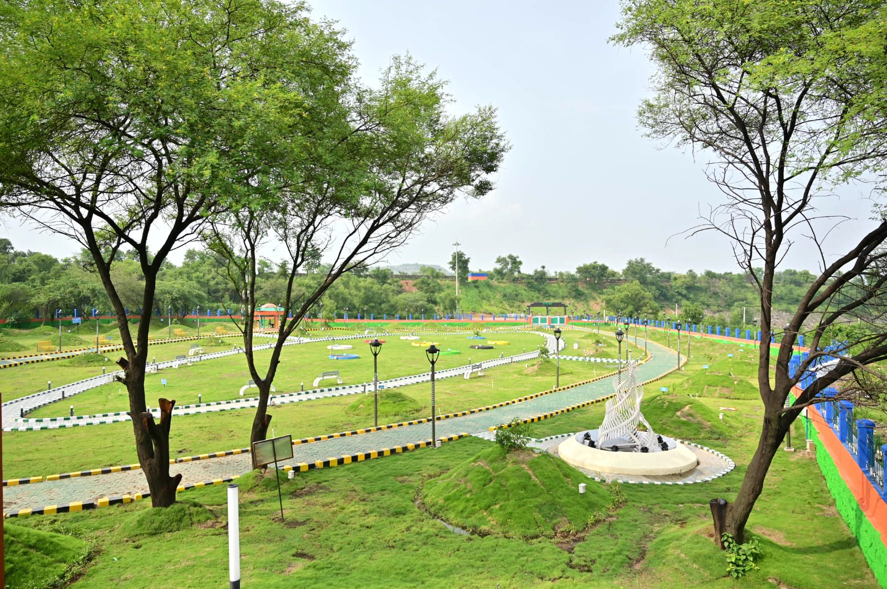
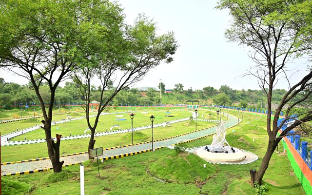
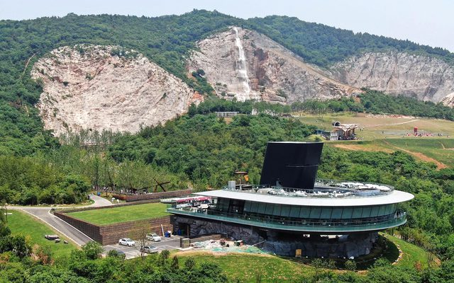
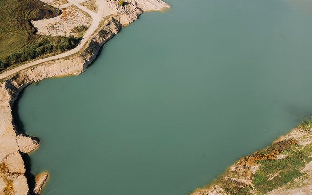
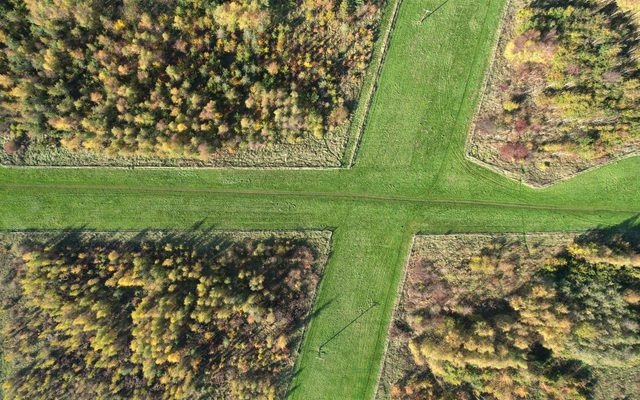
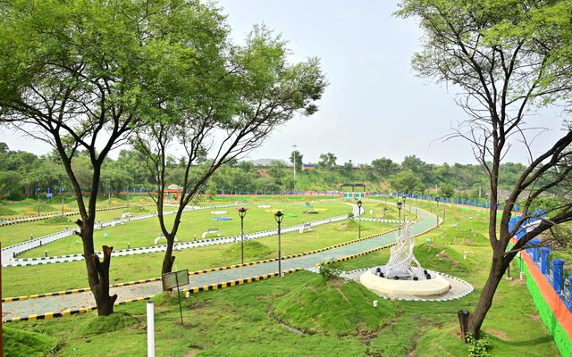
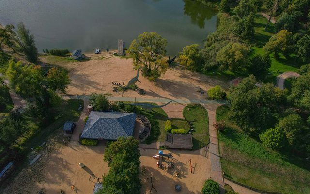
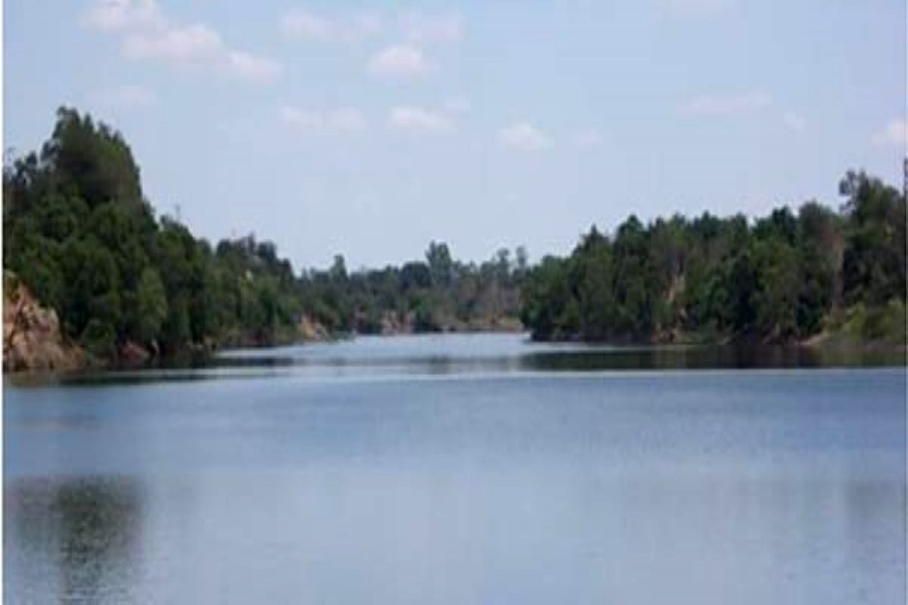
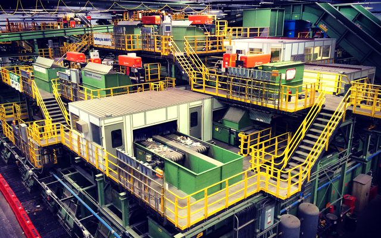

सुविकल्प: Mine Repurposing Tool
Select factors and sub-factors to discover suitable repurposing options for your mining site
![Coal Controller Organisation emblem]()


Eco parks are being increasingly developed in India to promote environmental conservation, eco-tourism, and recreational activities. These parks provide green spaces for nature-based tourism, biodiversity conservation, environmental awareness, and community engagement while supporting sustainable development and local economic growth.
The closed coal mine can be repurposed into eco parks by utilizing reclaimed land, mine voids, water bodies, and restored green areas for development of landscaped gardens, walking trails, boating facilities, biodiversity zones, and recreational spaces. This approach supports ecological restoration, sustainable post-mining land use, tourism promotion, environmental education, and livelihood generation for local communities.
Overview, strategic rationale, site suitability and indicative scale configurations for eco-park and mine tourism development on closed coal mine land.
An Eco-Park on closed mine land transforms a post-mining liability into a long-term public green asset — combining ecological restoration, community recreation, mine tourism, and local livelihood generation. Closed mine areas offer unique built-in advantages:
Eco-park development on closed mine land addresses multiple strategic imperatives simultaneously:
The following matrix provides a structured checklist for assessing the suitability of the proposed site for the selected repurposing option. It identifies the key physical, technical, environmental, infrastructure, legal, and owner-side readiness parameters that should be reviewed before the project is advanced to the next stage of development. The purpose of this matrix is to help the project owner understand existing site conditions, technical requirements, potential constraints, and preparatory actions required before feasibility studies, approvals, or tendering are initiated.
| Parameter | Assessment Required | Relevance |
|---|---|---|
| Land status | Closure notification, permissible land use, ownership, encumbrances | Determines legal basis for repurposing |
| Landform stability | Slope, dump stability, subsidence risk, bench safety | Defines safe development zones |
| Mine void / pit lake | Depth, side slopes, water level, edge stability | Boating, viewpoint or restricted zone |
| Soil condition | pH, fertility, compaction, contamination | Plantation, lawns, dust suppression |
| Water availability | Quantity, quality, source, treatment need | Boating, irrigation, amenities |
| Biodiversity baseline | Birds, plants, wetland species, habitat corridors | Nature trails, eco-tourism value |
| Community proximity | Villages, SHGs, FPOs, schools, panchayats | Livelihood and education integration |
| Visitor potential | Nearby towns, schools, tourist circuits, transport | Scale and revenue planning |
The following matrix presents an indicative relationship between available site area, project scale, technical configuration, and likely development potential. It is intended to support preliminary planning by helping the project owner identify the appropriate scale and configuration for the proposed repurposing option. The values and recommendations are indicative and should be refined through detailed feasibility studies, site surveys, engineering assessments, and relevant technical and commercial evaluations.
| Scale | Land Area | Key Features | Suitable Model |
|---|---|---|---|
| Pilot Eco-Park | 1–5 ha | Entry plaza, walking trail, seating, native plantation, children's play zone, interpretation boards, kiosk | EPC / EPC+O&M |
| Community Eco-Park | 5–20 ha | Walking & cycling tracks, lawns, water feature, play area, outdoor gym, cafeteria, kiosks, parking | EPC+O&M / Concession |
| Integrated Eco-Tourism Landscape | 20–50 ha | Thematic zones, mine-viewpoint, pit-lake edge, boating, amphitheatre, interpretation centre, nursery, eco-trails | Concession / Hybrid |
| Large Eco-Tourism Destination | 50–100 ha | Regional recreation, lakefront, adventure zone, visitor centre, food court, event lawn, eco-cottages | DBFOT / Hybrid |
| Regional Mine-Closure Landscape | 100 ha+ | Multi-zone park, pit-lake tourism, biodiversity zones, solar-park linkage, heritage mine trail, community hub | DBFOT / PPP Concession |
Implementation options, comparative model assessment and responsibility logic for eco-park development on closed mine land.
The following table outlines the possible implementation models that may be considered for developing the proposed repurposing project. These models differ in terms of ownership structure, funding responsibility, private sector participation, operational control, and long-term risk allocation. The purpose of this table is to help the project owner compare broad development routes and select an implementation approach that aligns with its financial capacity, institutional preference, risk appetite, and long-term asset management objectives.
The following comparative assessment evaluates the major implementation models across key decision parameters such as investment requirement, ownership control, financing responsibility, contractual complexity, risk transfer, and long-term economic benefit. This matrix is intended to support early-stage decision-making by highlighting the relative strengths and limitations of each model. The final choice of model should be guided by the specific circumstances of the project, including its scale, commercial viability, applicable policy framework, and the owner's institutional preference.
| Model | Capital Source | Owner Control | Livelihood Integration | Revenue to Owner | Best For |
|---|---|---|---|---|---|
| EPC | Owner / Mine closure fund | Full | Low–Medium | Full | Small welfare eco-parks |
| EPC + O&M | Owner / CSR | High | Medium | Full | Owner-managed parks with professional ops |
| Concession / LDO | Private / SHG | Moderate | High | Lease + share | Community-linked livelihood parks |
| DBFOT | Private + VGF | Low | Medium | Revenue share | Large eco-tourism destinations |
| Hybrid | Mixed | Moderate | Very High | Moderate–High | Balanced ecological + livelihood + revenue |
The following table explains how major project responsibilities are typically allocated under different implementation models. It covers key functional areas such as site availability, financing, design and construction, regulatory approvals, operation and maintenance, revenue collection, asset ownership, and end-of-term transfer. This helps clarify the respective roles of the project owner, private developer, EPC contractor, operator, or concessionaire, and supports the preparation of tender documents and contractual structures.
| Responsibility | EPC+O&M | Concession / LDO | DBFOT | Hybrid |
|---|---|---|---|---|
| Land & legal clearances | Owner | Owner | Owner | Owner |
| CAPEX — infrastructure | Owner | Concessionaire | Developer | Shared |
| Landscape & plantation | Contractor | Concessionaire | Developer | Owner + CAMPA |
| Day-to-day operations | O&M agency | Concessionaire / SHG | Developer | SHG/FPO + agency |
| Visitor services & ticketing | O&M agency | SHG/FPO | Developer / SHG | SHG/FPO |
| Safety & compliance | Owner + agency | Shared | Developer | Shared |
| Revenue collection | Owner | Concessionaire → shares | Developer → shares | Shared mechanism |
Funding logic, revenue generation, livelihood impact and combined financial comparison across implementation models.
The following table presents the broad funding logic for each implementation model. It explains who is expected to finance the project, the level of owner-side funding requirement, and the commercial rationale behind each structure. This section is intended to help the project owner assess whether the project is more suitable for owner-funded development, private investment, public-private partnership, lease or concession structure, or a hybrid funding arrangement.
The following table explains how revenue may be generated under different implementation models and identifies who is likely to receive the principal project income. It also describes the nature and extent of the financial benefit available to the project owner, whether through direct project revenue, cost savings, lease income, concession fees, revenue sharing, service charges, or eventual asset transfer. This comparison is intended to support the selection of a commercially appropriate model for the proposed repurposing project.
| Revenue Stream | EPC+O&M | Concession / LDO | DBFOT | Hybrid |
|---|---|---|---|---|
| Entry tickets & parking | Owner | Concessionaire → shares | Developer → shares | Shared |
| Boating & water recreation | O&M agency | SHG/FPO | Developer / SHG | SHG/FPO |
| Cafeteria & kiosk rentals | Owner / agency | SHG/FPO lease | SHG/FPO sublease | SHG/FPO |
| Events & cultural programmes | Owner | Concessionaire | Developer | Shared |
| Eco-tourism & accommodation | Owner / agency | Concessionaire | Developer | Developer / SHG |
| Training & interpretation fees | Owner | Shared | Developer | NGO / SHG |
| CSR & grant receipts | Owner | Shared | Owner | Owner + NGO |
The following table assesses the likely local livelihood and employment potential of each implementation model. It considers the extent to which each model can support construction-phase jobs, long-term operational employment, local procurement opportunities, skill development, community participation, and associated support services. This section is particularly relevant where the repurposing project is expected to contribute to post-mining or post-operational economic transition and sustained local community benefit.
The following table explains how revenue may be generated under different implementation models and identifies who is likely to receive the principal project income. It also describes the nature and extent of the financial benefit available to the project owner, whether through direct project revenue, cost savings, lease income, concession fees, revenue sharing, service charges, or eventual asset transfer. This comparison is intended to support the selection of a commercially appropriate model for the proposed repurposing project.
The following combined comparison brings together three important dimensions of project structuring: revenue potential, owner-side financial benefit, and local livelihood generation. It provides a consolidated view of how each implementation model performs across commercial, institutional, and community-development perspectives. This matrix is intended to support balanced decision-making where the objective extends beyond financial return to include sustainable site reuse and long-term local economic benefit.
| Model | Revenue to Owner | Profitability | Livelihood Impact | ESG Value | Overall Suitability |
|---|---|---|---|---|---|
| EPC | Full | Low (high O&M burden) | Low–Medium | Medium | Small welfare parks |
| EPC + O&M | Full | Medium | Medium | Medium–High | Owner-managed parks |
| Concession / LDO | Lease + share | Medium | High | High | Community eco-parks |
| DBFOT | Revenue share | Medium–High (developer) | Medium | Medium | Large eco-tourism sites |
| Hybrid | Moderate–High | High (shared risk) | Very High | Very High | All scales — recommended |
Pre-RFP readiness, post-award activities and indicative implementation pathway for eco-park development on closed mine land.
The following section identifies the key owner-side preparatory actions that should ideally be completed before issuing the first Request for Proposal. These actions are aimed at reducing uncertainty for prospective bidders, improving project bankability, clarifying site availability, identifying approval pathways and risks, and defining the technical and commercial scope of the project. Completing these preparatory steps before tendering can improve bid quality, attract credible responses, and reduce the risk of delays during project implementation.
Before issuing an RFP for an eco-park-based mine repurposing project, the mine owner should prepare the following in priority order:
The following section lists the principal activities that may be undertaken by the selected contractor, developer, concessionaire, operator, or implementation agency after award of the project. These activities generally include detailed site investigations, engineering design, statutory submissions and approvals, equipment procurement, construction, commissioning, operational planning, staff training, and performance monitoring. The distinction between pre-RFP owner preparedness and post-award implementation responsibilities helps ensure an appropriate and efficient allocation of effort across the project development cycle.
After award, the selected concessionaire / contractor / O&M agency / eco-park operator can take up the following activities in chronological order:
The following matrix presents an indicative relationship between available site area, project scale, technical configuration, and likely development potential. It is intended to support preliminary planning by helping the project owner identify the appropriate scale and configuration for the proposed repurposing option. The values and recommendations are indicative and should be refined through detailed feasibility studies, site surveys, engineering assessments, and relevant technical and commercial evaluations.
| Phase | Activity | Responsible | Timeline |
|---|---|---|---|
| Phase 0 — Preparation | Site surveys, safety mapping, soil & water testing, community mapping, market assessment | Mine owner / specialist agency | 3–6 months |
| Phase 1 — Procurement | Model selection, RFP / tender preparation, EOI / RfS / RFP issuance, evaluation & award | Mine owner + CCO / legal | 4–8 months |
| Phase 2 — Development | Master planning, civil works, landscaping, plantation, infrastructure, SHG onboarding | Contractor / concessionaire | 12–24 months |
| Phase 3 — Soft Launch | Pilot visitor operations, trial events, feedback, safety audit, ticketing system commissioning | Operator / O&M agency | 2–3 months |
| Phase 4 — Full Operations | Public opening, revenue operations, SHG activities, monitoring, scaling and diversification | Operator + SHG/FPO + owner | Ongoing |
Way forward, references and abbreviations for eco-park and mine tourism implementation on closed coal mine land.
The following way forward summarizes the preferred development approach for the proposed repurposing option, based on the assessment presented in PRISM (Post Mining Repurposing Implementation and Strategy Models). It identifies the most suitable implementation models in order of preference, highlights key technical and due-diligence considerations, and outlines the recommended next steps and broad development logic. This section is intended to guide internal decision-making and support the project owner in progressing from concept-stage evaluation toward feasibility assessment, project structuring, regulatory approvals, and implementation planning.
Preferred Models, in order: (1) Hybrid Model, (2) Concession / Lease-Develop-Operate, (3) DBFOT
Why preferred: Hybrid is preferred because eco-parks require ecological restoration, public safety, visitor services and community livelihood. The hybrid mix should include owner-funded landscape restoration + private visitor-service operator + NGO / community participation + local vendor obligations.
Secondary option: EPC + O&M is suitable where the owner wants full control over public access, ecological outcomes and park maintenance.
Suggestable technical care: Slope safety, water-body safety, planting, trails, lighting, waste management, visitor carrying capacity, security and emergency response must be planned.
Recommended development logic: Start with fencing, trails, plantation, seating, toilets, kiosks and interpretation. Add boating, cycling, events and eco-tourism only after safety and demand are proven.
Disclaimer — All repurposing interventions proposed under P.R.I.S.M. shall remain subject to applicable mining laws, land-use regulations, environmental approvals, mine-closure conditions, forest and biodiversity regulations, groundwater permissions, and any other statutory approvals as may be applicable. Land ownership is proposed to remain with the mine owner / competent authority unless otherwise permitted under applicable law.
| Abbreviation | Full Form |
|---|---|
| BOOT | Build-Own-Operate-Transfer |
| CAMPA | Compensatory Afforestation Fund Management and Planning Authority |
| CAPEX | Capital Expenditure |
| CCO | Coal Controller Organisation |
| CSR | Corporate Social Responsibility |
| DBFOT | Design-Build-Finance-Operate-Transfer |
| EPC | Engineering, Procurement and Construction |
| ESG | Environmental, Social and Governance |
| FPO | Farmer Producer Organisation |
| LDO | Lease-Develop-Operate |
| MoEFCC | Ministry of Environment, Forest and Climate Change |
| MGNREGS | Mahatma Gandhi National Rural Employment Guarantee Scheme |
| NCL | Northern Coalfields Limited |
| NLC | Neyveli Lignite Corporation (NLC India Limited) |
| O&M | Operations and Maintenance |
| PPP | Public-Private Partnership |
| RFP | Request for Proposal |
| RfS | Request for Selection |
| SECL | South Eastern Coalfields Limited |
| SHG | Self-Help Group |
| VGF | Viability Gap Funding |








Links open external websites. Coal Controller Organisation does not endorse third-party content.


.png)


Disclaimer: Inclusion of an agency on this list does not constitute endorsement, empanelment, or recommendation by the Coal Controller Organisation or the Ministry of Coal, Government of India. Mine owners and project proponents are advised to conduct their own due diligence process before engaging any agency.
Disclaimer: Inclusion of an expert does not constitute endorsement, empanelment, or recommendation by the Coal Controller Organisation or the Ministry of Coal, Government of India. Users are advised to independently verify credentials and suitability before engaging any individual.
Expert ecological restoration practitioner with experience in converting degraded mine land into productive green and recreational ecosystems.
Director of IGCMC with expertise in eco-park development, landscape restoration and climate-resilient land use.